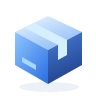
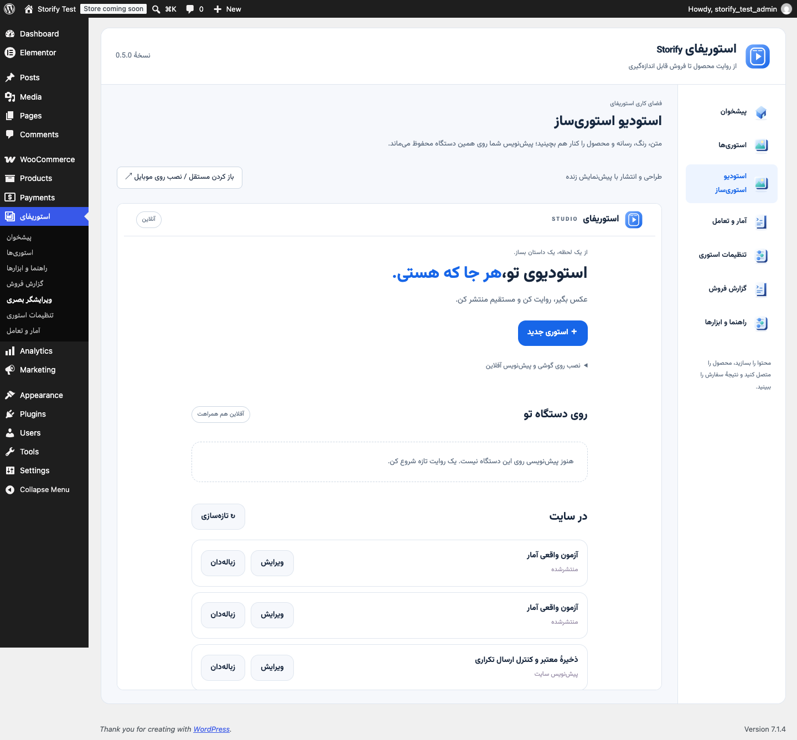

یک لمس، یک اسلاید
لبههای تصویر را لمس کن؛ قبلی و بعدی در دسترساند.
استوریفای؛ استوریساز خلاق وردپرس
فقط یک ردیف دایره نیست. یک استودیوی خلاق، یک ویترین زنده و یک مسیر کوتاهتر تا خرید است؛ همه در وردپرس تو.
با ابزارهایی که هر روز استفاده میکنی.

خرید در استوریگزارش واقعیدسترسی کنترلشدهظاهر آماده؟ یا امضای خودت؟
از حلقهٔ مینیمال تا نئونِ دنبالهدار؛ یک سبک را لمس کن، بعد جزئیاتش را خودت بساز.
رنگ، گرادینت، اندازه، فاصله، سایه، گوشه و برچسب.
همین کنترلها در تنظیمات افزونه هم در اختیار توست.
۰۱ / به سبک خودت نمایش بده
حلقههای آشنا یا کارتهای جسورانه؟
انتخاب با توست. روی یک استوری بزن.
این بخش دموی تعاملی صفحهٔ معرفی است؛ خرید و دادههای آن آزمایشیاند.
محو، لغزش یا چرخش سهبعدی؟ ترانزیشن را انتخاب کن و جابهجایی همزمان دو استوری را ببین؛ با همان موتور حرکت افزونه.
کاهش حرکت دستگاه رعایت میشود؛ انیمیشنها قابل تنظیماند.
حرکتهایی که از قبل بلدی
لبههای تصویر را لمس کن؛ قبلی و بعدی در دسترساند.
با کشیدن افقی، سراغ استوری بعدی برو؛ با کشیدن پایین ببند.
برای دیدن جزئیات، انگشت یا موس را نگهدار؛ رها کن و ادامه بده.
جهتها، فاصله و Escape؛ کنترل بدون وابستگی به لمس.
انتخابِ راحت، همانجا
رنگ دلخواهت
۰۲ / استوری، با قدرت ووکامرس
محصول ساده یا متغیر را به اسلاید وصل کن. بازدیدکننده ویژگیها را انتخاب میکند، قیمت و موجودی فعلی را میبیند و بدون پرش فوری به صفحهای دیگر، محصول را به سبد اضافه میکند.
افزودن به سبد، فروش محسوب نمیشود. نتیجهٔ مالی از وضعیت واقعی سفارش خوانده میشود.
۰۳ / استودیویی که همراه توست
عکس بگیر. متن را جابهجا کن. رنگ و چیدمان را تغییر بده. لینک و محصول را اضافه کن و قبل از انتشار، نتیجه را ببین.
ویدیوی MP4 یا WebM انتخاب کن یا روی گوشی سازگار ضبط کن؛ پیشنمایش را ببین و منتشر کن. تا ۶۰ ثانیه و ۲۰ مگابایت، در سقف آپلود سایت.
ذخیرهٔ پیشنویس آفلاین؛ بدون تبدیل یا برش خودکار فایل.پیشنویس و رسانهٔ محلی روی همان دستگاه ذخیره میشوند. انتشار با اتصال دوباره و انتخاب خودت انجام میشود.
۰۴ / یک فضای کاری منظم
ساختن، تنظیمکردن و اندازهگیری؛
همه در یک فضای فارسی و یکپارچه.

تصاویر واقعی محیط آزمایشی افزونه؛ اعداد داخل گزارش، دادههای تست هستند.
۰۵ / عددهایی که معنا دارند
نمایش استوری و اسلاید، نرخ تکمیل، کلیک لینک، باز کردن محصول و افزودن موفق به سبد را دنبال کن. کنار آن، فروش و بازپرداخت را جداگانه و برای هر ارز ببین.
نگاهی به گزارش واقعی ↖داستان، شروع یک گفتگوست
ثبت وضعیت پسندیدن، لغو لایک، جلوگیری از ثبت تکراری برای همان هویت و فعالسازی اختیاری لایک مهمان.
در افزونه: حساب عضو یا کوکی امضاشدهٔ مرورگر.نظرهای اعضا پس از تأیید دیده میشوند. دریافت استوری از کاربران هم با فرم اختصاصی و بررسی مدیر انجام میشود.
تصویر گفتگو نمونه است؛ نظر واقعی کاربر نیست.لینک و متن اختصاصی، رنگ دکمه و محصول متغیر؛ مخاطب را به قدم بعدی دعوت کن و کلیک را در گزارش ببین.
دکمهٔ نمونه را لمس کن.زیبا برای مخاطب. خوانا برای جستوجو.
هر استوری یک صفحهٔ مستقل دارد. عنوان، توضیحات و متن اسلایدها در HTML سرور قابل خواندناند؛ محتوای تو پشت یک پلیر جاوااسکریپتی پنهان نمیماند.
تصویر، توضیحات و محصولات یک داستان؛ در صفحهای با محتوای خواندنی، آدرس مستقل و اطلاعات اشتراکگذاری.
عنوان و توضیحاتCanonicalJSON-LDکادر بالا نمونهٔ نمایشی است. رتبه، ایندکس و نمایش نتیجهٔ غنی را موتور جستوجو تعیین میکند.
کاورها تنبل بارگذاری میشوند و رسانهٔ پلیر هنگام نیاز دریافت میشود. فایلهای افزونه محلی و خروجی انتشار فشرده است؛ موتور حرکت به کتابخانهٔ سنگین وابسته نیست.
سرعت نهایی به اندازهٔ تصویر و ویدیو، هاست، کش و قالب وابسته است. نمودار بالا توضیح مسیر بارگذاری است، نه نتیجهٔ بنچمارک یا امتیاز PageSpeed.
زیبایی روی یک پایهٔ قابل بررسی
کنترل دسترسی، اعتبارسنجی و بارگذاری هدفمند؛ جزئیاتی که تجربهٔ خوب به آنها وابسته است.
Nonce و مجوز برای تغییرهای حساب کاربری؛ توکن امضاشده و بررسی مبدأ برای لایک مهمان.
پاکسازی متن، محدودسازی مقادیر، بررسی مالکیت رسانه و رد URLهای ناامن در ذخیرهسازی.
HttpOnly و SameSite؛ روی HTTPS با Secure. لایک مهمان روی HTTP عمومی فعال نمیشود.
نقشها، REST، تنظیمات و رسانه با APIهای وردپرس؛ سفارشها با CRUD ووکامرس و HPOS.
بارگذاری تنبل کاورها، رسانهٔ پلیر هنگام نیاز، فایلهای محلی و خروجی فشرده؛ بدون کتابخانهٔ انیمیشن.
نامها و استایلهای اختصاصی، فایلهای محدود به صفحات مربوط و آزمون کنار ووکامرس و المنتور.
خرید محصول متغیر، قیمت جاری، سبد واقعی آزمایش، گزارش فروش و بازپرداخت، مجوزها، پیشنویس آفلاین، نقش عضو، لایک و تأیید نظر آزموده شدهاند. خواندن عمومی و دریافت اولیهٔ نشست، عملیات تغییر محتوا نیستند و nonce قبلی نمیخواهند؛ تغییرهای بعدی اعتبارسنجی میشوند.
هر افزونه هزینهٔ پردازش دارد. سرعت به رسانه و هاست وابسته است؛ «اثر صفر»، «امنیت مطلق» یا «بدون تداخل با تمام افزونهها» ادعا نمیکنیم. مرورگر و افزونههای آزمودهشده جای تست روی همهٔ گوشیها، درگاهها و سایت پرترافیک را نمیگیرند.
تمام جزئیات، یکجا
قابلیتهای موجود در نسخهٔ توسعهٔ ۰.۷
با توضیح روشنِ آنچه انجام میدهند.
اتصال تلگرام، تاریخگیر شمسی، قواعد خودکار پیشنهاد محصول، بازیابی سبد رهاشده و آمار تجمیعی بلندمدت هنوز جزو قابلیتهای آمادهٔ این نسخه نیستند.
شروع ساده است
استودیوی فارسی در پیشخوان وردپرس آمادهٔ شروع است. برای فروش، ووکامرس را فعال داشته باش.
تصویر، ویدیو یا زمینهٔ رنگی؛ متن و محصول را اضافه کن و ترتیب اسلایدها را بچین.
ویجت المنتور، بلوک گوتنبرگ، ابزارک یا شورتکد. یک محتوا، یک موتور نمایش.
[storify layout="vertical"]پیش از شروع
چند پاسخ روشن دربارهٔ استفاده، امکانات و محدودیتهای فعلی.
خیر. نمایش رسانه، طراحی استوری، لینک، تعامل و ارسال کاربران بدون ووکامرس هم کار میکنند. خرید مستقیم و گزارش مالی به ووکامرس نیاز دارند.
نه. المنتور یک گزینه است. بلوک گوتنبرگ، ابزارک وردپرس و شورتکد هم از همان موتور مشترک استفاده میکنند.
بله. استودیو یک PWA همدامنه با سایت است و از دوربین و گالری استفاده میکند. نصب و آمادهسازی آفلاین به HTTPS و یک بار ورود آنلاین نیاز دارد. پیشنویسها روی همان مرورگر نگهداری میشوند؛ رسانهٔ خارجی برای نمایش به اینترنت نیاز دارد.
در افزونه از ووکامرس خوانده میشود و هنگام افزودن به سبد دوباره بررسی میشود. محصول ساده و متغیر استاندارد پشتیبانی میشوند. دموی این صفحه فقط شبیهسازی محلی است و سفارش ایجاد نمیکند.
خیر. آمار بر پایهٔ پخشهای معتبر و تکرارزداییشده است، نه تخمین هویت افراد. قطع شبکه و مسدودکننده میتوانند باعث کمترشماری شوند. دادهٔ قبل از فعالسازی بازسازی نمیشود.
خیر. این قابلیت اختیاری است؛ کاربر باید وارد شده باشد و استوری تا تأیید مدیر نمایش داده نمیشود؛ فایل رسانه در کتابخانهٔ عمومی سایت ذخیره میشود. نظرها هم نیاز به تأیید دارند.
هر قابلیت وب هزینهای دارد. رسانهٔ پلیر هنگام نیاز بارگذاری میشود، تصویر کاورها lazy-load دارد و فایلها محلیاند؛ ولی نتیجه به رسانه، هاست و قالب وابسته است. ادعای «تأثیر صفر» نداریم.
این صفحه معرفی نسخهٔ توسعه است. قیمت، شرایط پشتیبانی و لینک خرید مارکت هنوز نهایی نشدهاند. تستهای محیط محلی جای آزمون روی گوشی واقعی، بار سنگین و همهٔ قالبها و درگاهها را نمیگیرند.
داستان بعدی، داستان توست.
بدون ورود، بدون پرداخت؛ فقط یک پیشنمایش تعاملی.